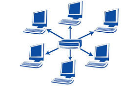
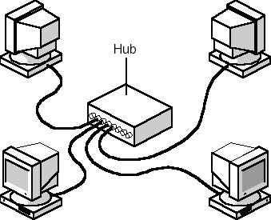
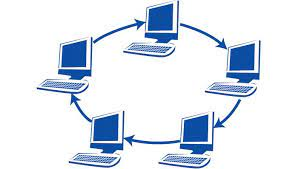
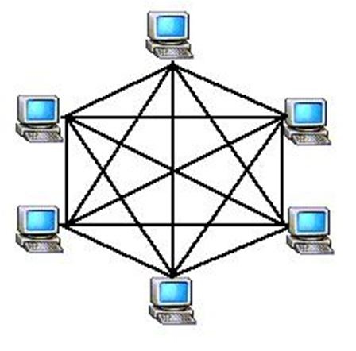
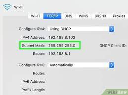

A topoloia é um sistema que demonstra como os hosts estão conectados a rede, destacando a estrutura da rede, e é mostrado tanto fisicamente ou logicamente.
Existe dois tipos de topologia de rede, a logica e a fisica. A topologia Fisica mostra como os hosts estão dispostos e conectados no ambiente fisco. Seguindo um Layout Fisico como a posição de cada host, a forma que os cabos estão conectados, nos mostrando toda a topologia de rede, que o objetivo é auxiliar em varios pontos critics, como a maleabilidade, velocidade na transferencia dos dados e segurança.
A topologia logica é um pouco diferente, ela demonstra a forma como os daods são transmitidos na rede, ou a dorma que os dadso passm de um host para outro, sem se preocupar com a conexão fisica dos hosts, a forma como os dados são transmitidos na rede podem ser controladas por switches e roteadores
Beneficios e desvantagens de cada topologia:Barramento. Os hosts estão conectados no mesmo meio fisico ,embora os dados não circulem de fato nos nós,portanto se um computador estiver tentando escrever para outros computadores e os dados enviandos podem acabar colindo um no outro interropendo a conexã.
Estrela atualmente é a topologia mais utilizada, usa o meio fisico de par trançado com um centralizador de rede como Switch e Roteador, este se entrega de fazer a cominucação entre os hosts, essa parte facilita detecção dos problemas, então se um computador não estiver ligado na rede a Luz do concebtrador fica desligada, mostrando que tem algum problema no host.
Estes hosts funcionam conectados em uma serie na qual forma um circulo,aonde os dados passam por todos os hots ate chegar no seu destinario,e somente quem recebe e quem envia pode mecher na mensagem.
Esta é uma topologia muito utilizada ,pois ela facilita a instalação e a configuração dos hots. E se entrelaçam pois assim existem varios caminhos possiveis.
Para obtter a cominucação ente os hosts da minha rede, precisa se da parte fisica(topologia cabeamento) para que a rede tenha a possibilidade de ter uma comunicação entre os hosts, porem necessita ter a configuração logica, sem esses fatores não é possivel estabelecer uma comunicação entre os hosts da rede.
O protocolo ipv4, ou protocolo, esse protocolo permite que os hosts trafeguem na internet, todo host que estiver conectado terá um código que permite enviar e receber informações de outros hosts que estão conectados na rede. Endereços IP, o IPV4 é formado por 04 blocos de 8 bits, estes são exibidos por números de 0 a 255. Os endereços IPV4 que iniciam com “192.168”, com 10 ou com 172.16 até 172.31, estes os códigos poupados para redes locais, portanto não são utilizados na internet.
Podemos imaginar a máscara de rede como um bairro que possui várias casas (IPs). Os IPs que utilizam uma determinada classe, pertence a aquela classe, da mesma forma que se uma casa (IP), está presente no bairro que seria a máscara de rede, pertencendo a mesma forma, sendo que cada IP corresponde a uma máscara de rede.
Gateway é um aplicativo de rede que se depara com duas redes. Podendo traduzir o termo gaateway como um portão, é assim que essa tecnologia funciona, ele é um portão que libera o acesso ou não das outras redes. Liberando a passagem dos dados entre hosts como: Tablet, telefone, computador, notebook entre outros. Pode ser instalado verificando a segurança dos dados do computador ate a internet. Como se fosse um portal que libera o acesso para o mundo externo, ele isola a rede domestica com a internet.
